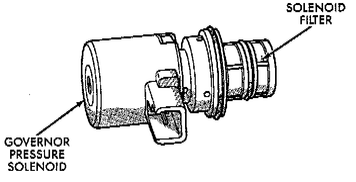
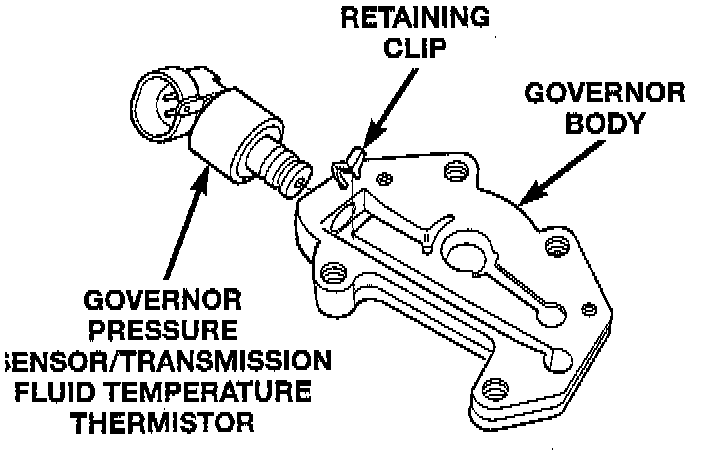

Governor: Description and Operation
ELECTRONIC GOVERNORGovernor pressure is controlled electronically. Components used for governor pressure control include:
- Governor body
- Valve body transfer plate
- Governor pressure solenoid valve
- Governor pressure sensor
- Fluid temperature thermistor
- Throttle Position Sensor (TPS)
- Transmission speed sensor
- Powertrain Control Module (PCM)

GOVERNOR PRESSURE SOLENOID VALVE
The solenoid valve is a duty-cycle solenoid which regulates the governor pressure needed for upshifts and downshifts. It is an electro-hydraulic device located in the governor body on the valve body transfer plate.
The inlet side of the solenoid valve is exposed to normal transmission line pressure. The outlet side of the valve leads to the valve body governor circuit.
The solenoid valve regulates line pressure to produce governor pressure. The average current supplied to the solenoid controls governor pressure. One amp current produces zero kPa/psi governor pressure. Zero amps sets the maximum governor pressure.
The Powertrain Control Module (PCM) turns on the bans control relay which supplies electrical power to the solenoid valve. Operating voltage is 12 volts (DC). The PCM controls the ground side of the solenoid using the governor pressure solenoid control circuit.

GOVERNOR PRESSURE SENSOR
The governor pressure sensor measures output pressure of the governor pressure solenoid valve.
The sensor output signal provides the necessary feedback to the PCM. This feedback is needed to adequately control governor pressure.
GOVERNOR BODY AND TRANSFER PLATE
The transfer plate is designed to supply transmission line pressure to the governor pressure solenoid valve and to return governor pressure.
The governor pressure solenoid valve is mounted in the governor body. The body is bolted to the lower side of the transfer plate. The transfer plate channels line pressure to the solenoid valve through the governor body. It also channels governor pressure from the solenoid valve to the governor circuit. It is the solenoid valve that develops the necessary governor pressure.
GOVERNOR PRESSURE CURVES
There are four governor pressure curves programmed into the transmission control module. The different curves allow the control module to adjust governor pressure for varying conditions. One curve is used for operation when fluid temperature is at, or below, 1°C (30°F). A second curve is used when fluid temperature is at, or above, 10°C (50°F) during normal city or highway driving. A third curve is used during wide-open throttle operation. The fourth curve is used when driving with the transfer case in low range.